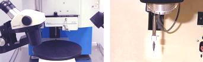

Bond Strength
Tests: Wire Pull Test and Ball Shear Test
<Back to Wirebonding>
Wire Pull Testing (WPT), or
bond pull testing, is
one of several available time-zero tests for wire bond strength and
quality. It consists of applying an
upward force under
the wire to be tested, effectively pulling the wire away from the die.
Wire pull testing
requires a special equipment commonly referred to as a
wire pull tester
(or bond pull tester), which consists of two major parts: 1) a mechanism
for
applying
the upward pulling force on the wire using a tool known as a
pull hook; and 2) a calibrated
instrument
for
measuring
the force at which the wire eventually breaks. This
breaking force
is usually expressed in grams-force.
|

Fig. 1.
Photos of
a wire pull
tester stage (left) and a pull hook (right)
|
There exist many
variants or test conditions for performing the WPT, but the most widely
used test condition for conventional wirebonded devices is the
double-bond
wire pull test. This procedure consists of applying the pull hook under
a wire that is attached at
both
ends (say, one end to a bond pad on the die, and the other end to the
bonding finger or bonding post of the package). The pull hook is usually
positioned at the
highest
point along the loop of the wire, and the pulling force is usually
applied
perpendicular
to the die surface (vertically if the die surface is horizontal).
The wire
pull tester measures the pulling force at which the wire or bond fails.
The measured force is then recorded in grams-force. Aside from the bond
strength reading, the operator must also record the
bond failure mode.
Failure mode in this context refers to one of the following: 1) first
bond (ball bond) lifting; 2) neck break; 3) midspan wire break; 4) heel
break; and 5) second bond (wedge bond) lifting. First or second bond
lifting is unacceptable and should prompt the process owner to
investigate why such a failure mode occurred.
Bond shear testing (BST)
is another test method for assessing the strength of a ball bond. This
test complements, but does
not
substitute,
wire pull testing. This is because of the existence of failure
mechanisms wherein the bond exhibits a high bond shear strength but
offers very little resistance to wire pull stresses.
A
bond shear tester
is needed to
perform the bond shear test. This equipment consists of a sample
holder, a
shearing arm
with a chisel-shaped tool at the end, and an
instrument
for
measuring
the shear strength of the bond.
Initially,
the shearing tool is positioned beside the ball bond to be tested. The
shearing arm then moves the tool horizontally against the ball, in
effect
pushing
the ball off its bond pad. The force needed to shear a ball off
its pad, known as the
bond shear
force,
is then measured by the ball shear tester.
The shear
force reading of a ball bond must be
correlated
with its ball
diameter
for proper assessment of its ball shear strength. On the other hand, the
shear force reading of a wedge bond must be correlated with the
tensile
strength of
the wire for proper assessment of its wedge shear strength.
The bond shear failure mode
observed during bond shear testing must also be noted. Bond
shear
failure modes include the following: 1) bond lifting; 2) bond shearing;
3) cratering; 4) bonding surface lifting (separation of the bonding
surface from its underlying substrate). Misplacement of the shearing
tool produces invalid bond shear failures, the shear force readings of
which must be excluded from analysis.
Modern bond
strength testers (Fig. 2) incorporate both
wire pull
and
bond shear
testing
capabilities.
Fig. 2.
Photos of Wire
Pull/Bond Shear Testers
<Wirebonding>
<Bonding
Theory>
See Also:
Wirebonding;
Bonding Theory; Bond
Lifting
HOME
Copyright
© 2001-2005
www.EESemi.com.
All Rights Reserved.